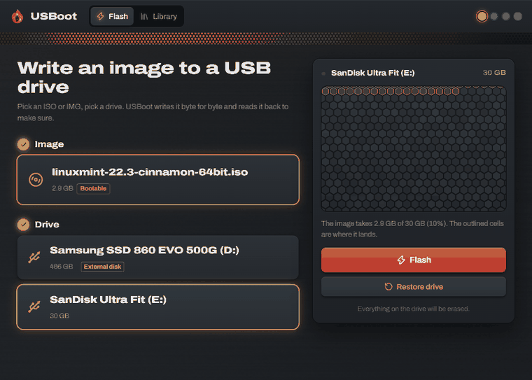

Pendrives booteables,
verificados byte a byte.
USBoot graba cualquier ISO en un pendrive y después lo vuelve a leer completo para comprobarlo. Su biblioteca siempre baja la última versión de Ubuntu, Fedora, Mint o Arch desde los servidores más rápidos. Pesa 3 MB, es gratis y de código abierto.

Todo lo que hacen Rufus y Etcher. Y más.
Hecho en Rust, por eso es liviano y rápido. Nada que configurar: eliges una imagen, eliges un pendrive.
Verificado, byte a byte
Después de grabar, USBoot lee todo el pendrive y lo compara. Un pendrive dañado o falso no puede esconderse.
Biblioteca de ISOs al día
20 distribuciones, siempre la última versión oficial, leída directo del archivo de verificación de cada proyecto.
Descargas desde varios espejos
Mide los servidores oficiales, descarta los lentos y baja de varios a la vez. En una prueba pasó de 44 KB/s a 16 MB/s.
Windows 11 a tu manera
Instálalo en PCs sin TPM 2.0 ni Secure Boot, con un usuario local en vez de cuenta Microsoft y sin preguntas de privacidad.
Varios pendrives a la vez
La misma imagen en todos los pendrives en paralelo, cada uno verificado por separado. Ideal para colegios y servicios técnicos.
Restaura cualquier pendrive
Con un clic vuelve a ser un pendrive normal con toda su capacidad. Arregla el "mi pendrive de 32 GB muestra 4 MB" después de grabar Linux.
La biblioteca
Cada descarga se compara con el SHA-256 oficial del proyecto antes de poder usarla.
Comparación
| USBoot | balenaEtcher | Rufus | |
|---|---|---|---|
| Tamaño de descarga | 3 MB | ~150 MB | ~1,5 MB |
| Verifica después de grabar | ✓ | ✓ | — |
| ISOs de instalación de Windows | ✓ | — | ✓ |
| Biblioteca de Linux con verificación | ✓ | — | — |
| Varios pendrives a la vez | ✓ | ✓ | — |
| Windows · Linux · macOS | ✓ | ✓ | Solo Windows |
| Recolección de datos | ninguna | sí | ninguna |
Instalar
Windows
winget install bernaljeanp.USBoot
macOS (chip Apple, beta)
brew install --cask --no-quarantine bernaljeanp/tap/usboot
Linux (beta)
.deb o .AppImage desde la última versión en GitHub